⭐ Featured Project
ITI Examination Management System
Full-Stack Data Engineering Project
Challenge: Educational institutions needed a comprehensive examination system integrating automated grading, real-time analytics, and AI support across 12 branches serving 9,000 students.
Solution: Built a full-stack data platform with Flask REST API, Gemini AI chatbot, ML prediction models, SSIS ETL pipelines, and interactive Power BI dashboards with 4 analytical views.
Impact: Reduced manual processing by 80%, enabled real-time decision-making for 96 instructors, and achieved 85% average attendance rate with automated tracking.
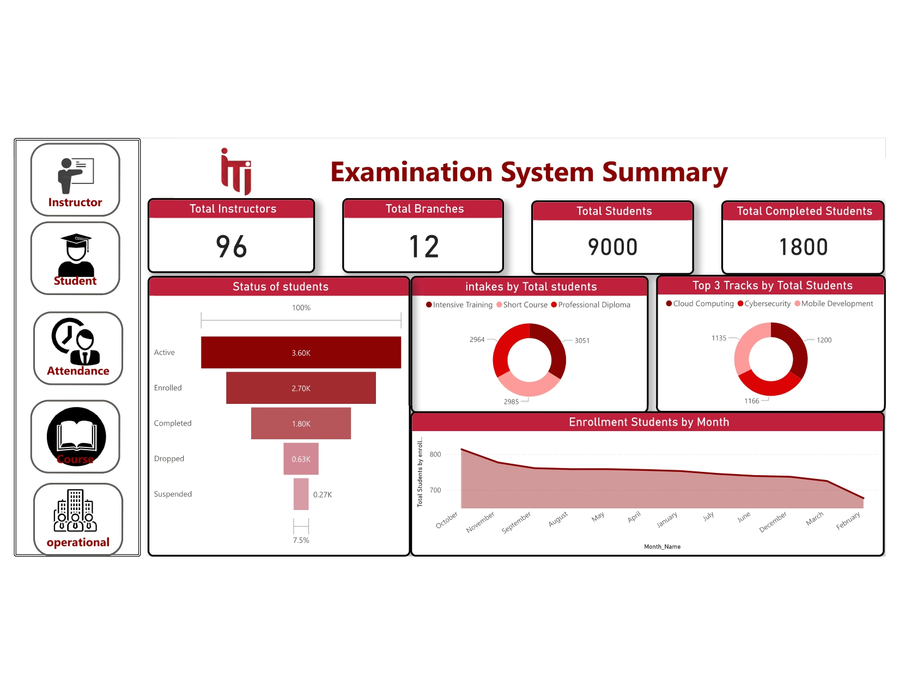
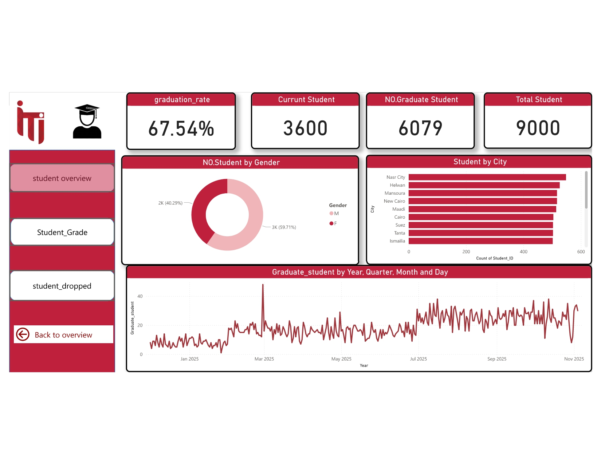
 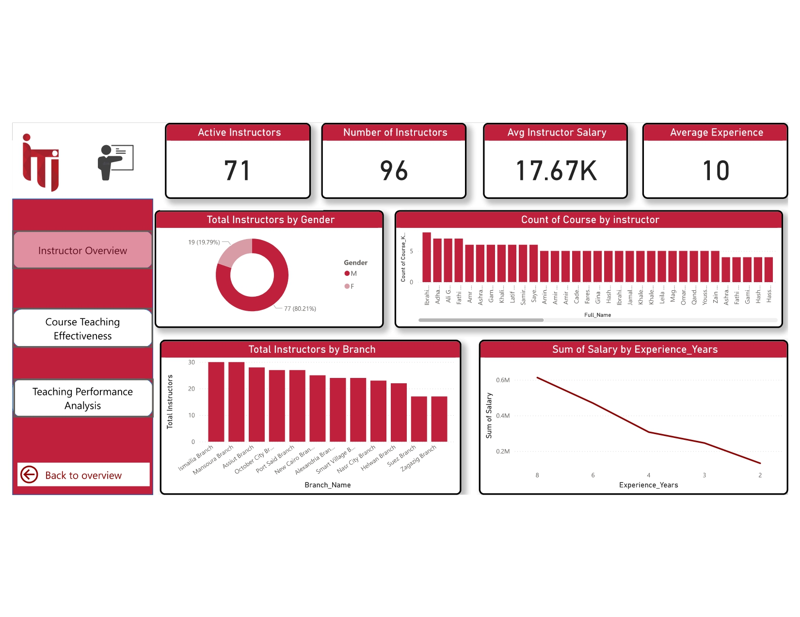
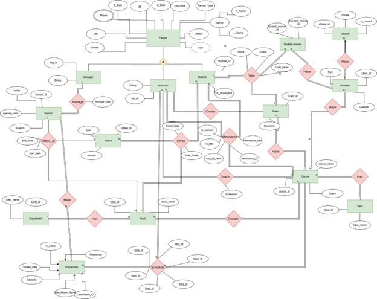
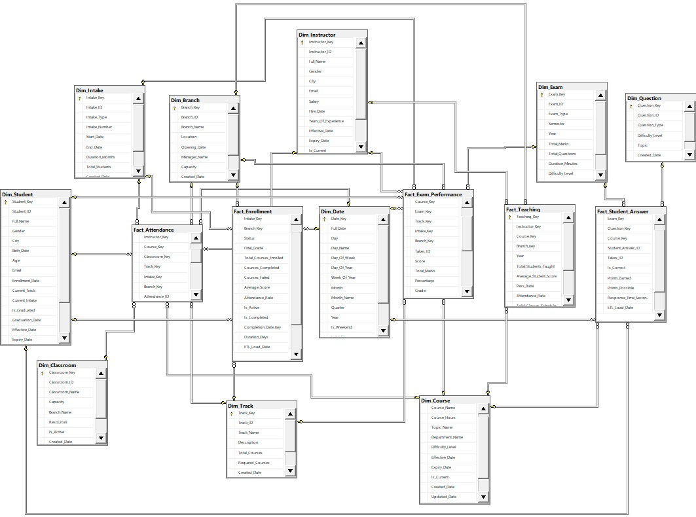
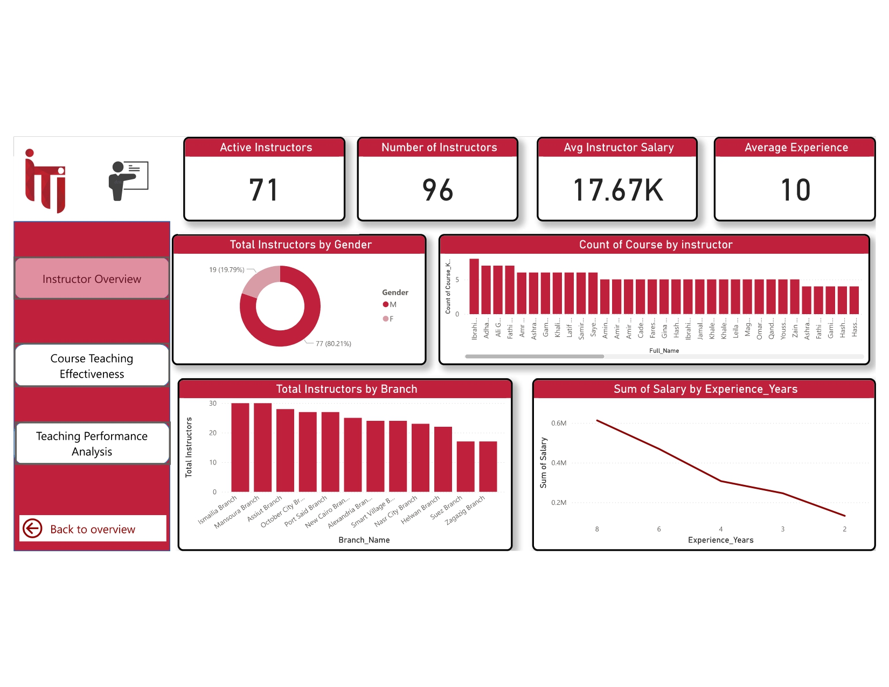
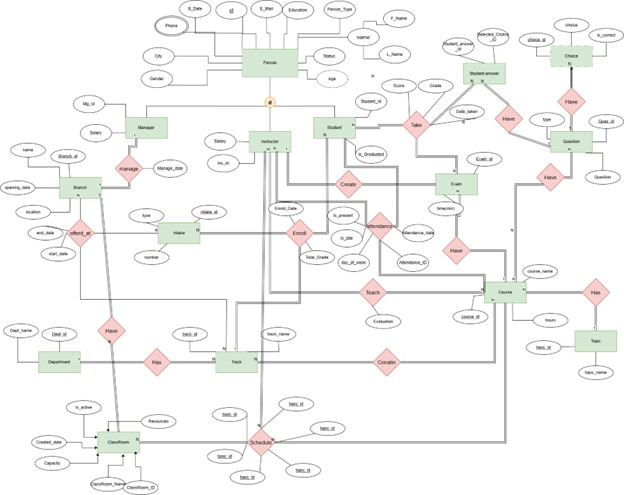
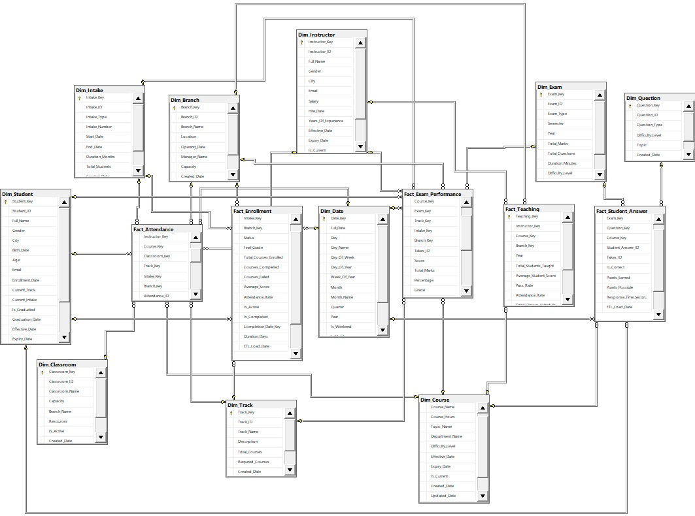
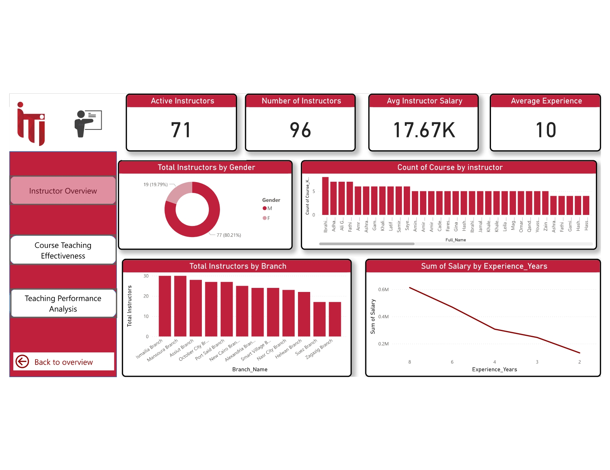
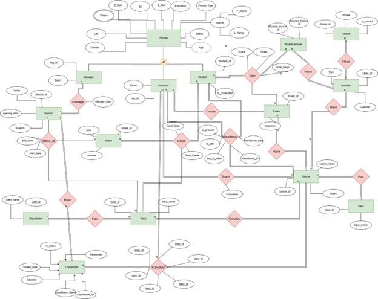
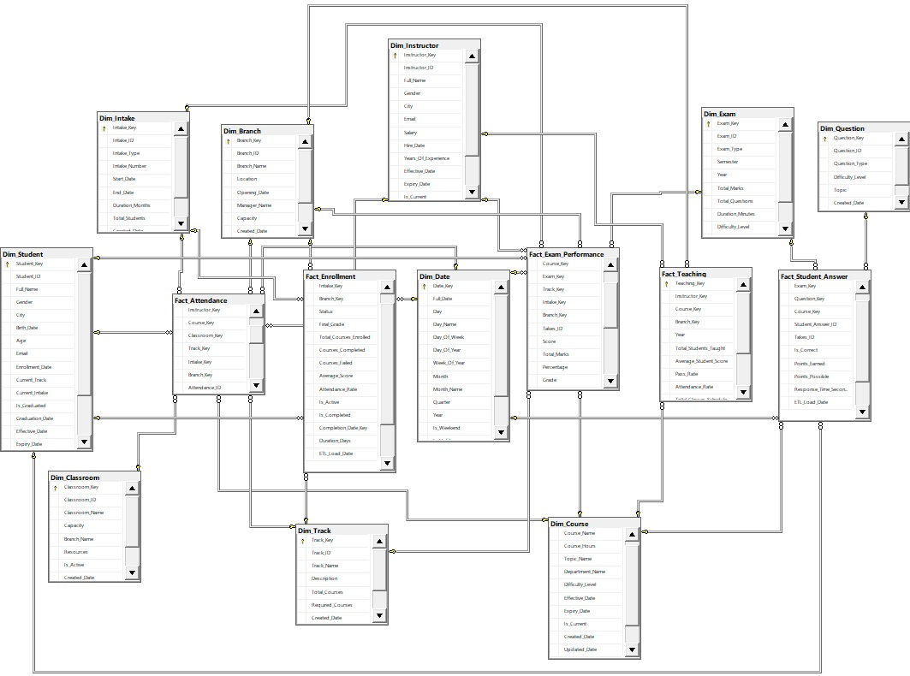
Flask
Python
SQL Server
SSIS
Power BI
DAX
Scikit-learn
Gemini API
REST API
ETL